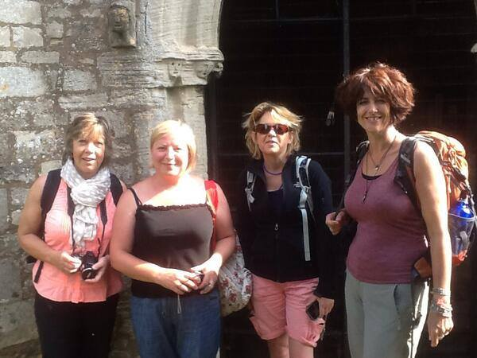
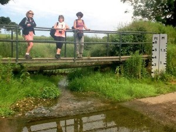
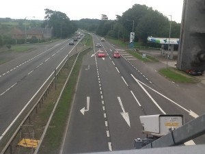

Day 2 of the #Newtonwalk test run saw our team set out from North Witham Church
Here’s the details of the day 2 route including Tweets and photos
Journeying towards Sir Isaac Newton’s family home at Woolsthorpe Manor in Colsterworth, the theme of Sir Isaac’s childhood was very much at the heart of this section of the walk.
A poignant moment as they crossed a stream, which featured right at the very outset of Newton’s life journey. John Conduitt, who married Newton’s niece Catherine Barton and took care of him in his old age wrote that“Sir I.N. told me that he had been told that when he was born he was so little they could put him into a quart pot & so weakly that he was forced to have a bolster all round his neck to keep it on his shoulders & so little likely to live that when two women were sent to Lady Packenham at North Witham for something for him they sate down on a stile by the way & said there was no occasion for making haste for they were sure the child would be dead before they could get back…” Source Corpus Newtonicum

Next a burning issue for the young Sir Isaac and his confession of wanting to burn down the Rectory of his step father Barnabas Smith who his mother remarried and left the family home to live with when he was only a few years old.
Here’s how the site looks today.
Thanks to the brilliant work of our festival patron Professor Rob Iliffe in his “Newton Project” you can actually see the written archive here from 1662, number 13 on Sir Isaac’s confessions list
During the Gravityfields festival the next stop, at Woolsthorpe Manor will form the centrepiece of the #Newtontreeparty project on Saturday 27th September with a special Newton reunion style reception including Professor Rob Iliffe and local historian Ruth Crook and many other special guests. For now just a chance to gaze at THAT apple tree and wonder…
The journey continued with a visit to Skillington, following the path to the old school where Sir Isaac Newton is believed to have attended during his formative years
Into the early afternoon and a welcome break at Stoke Rochford Hall, and a chance to admire the magnificent Obelisk dedicated to his achievements
From there, across the much travelled Great North Road looking slightly transformed from the 17th century days of Coaching Inns and highways
And onwards to the final destination of St Wulfram’s church in Grantham for a well earned rest!
So there you have it, a golden opportunity to immerse yourself in Newton’s Lincolnshire story. Hopefully that’s whetted your appetite for GravityFields in September, and if you would like to take part in the festival walks, places will be limited so early booking is highly recommended. To book your place for day 1 on Friday 26th September please visit http://www.gravityfields.co.uk/events/2014/newtons-footsteps-day-1 and for day 2 on Saturday including the #NewtonTreeParty event http://www.gravityfields.co.uk/events/2014/newtons-footsteps-day-2
There is mini-bus support provided , you can choose to walk as much or as little as you like, and walk leaders Ali Pretty and Richard White very much look forward to sharing the journey with you!
Pingback: Artists Who Walk In Wiltshire | Pass It On Wiltshire()